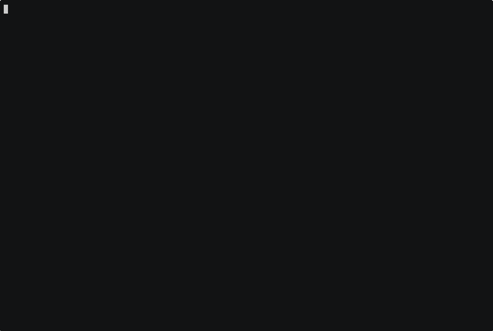

Dementor
IPv6/IPv4 LLMNR/NBT-NS/mDNS Poisoner - you can think if it as Responder 2.0
Attack Examples
Example attacks that can be carried out using Dementor.
Feature-rich Toolbox
Basic implementation of common network servers including SMB, SMTP, FTP and many more.
Highly Configurable
Configuration can be changed for each service individually
Getting Started¶
You can simply install Dementor using pip or directly from source!
pip install dementor
A simple Example¶
It is recommended to run Dementor as sudo, but it will not be enforced:
